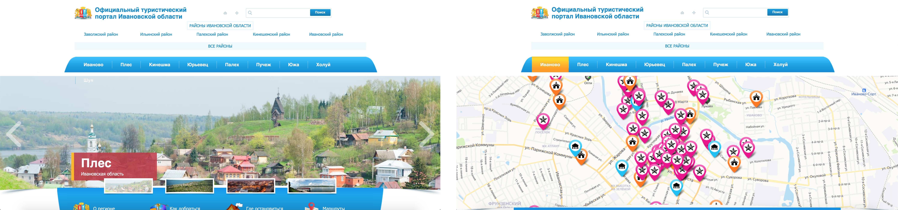
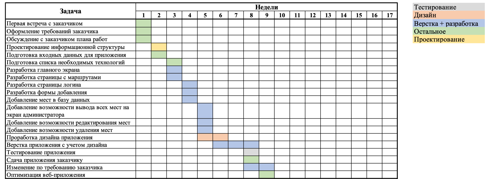
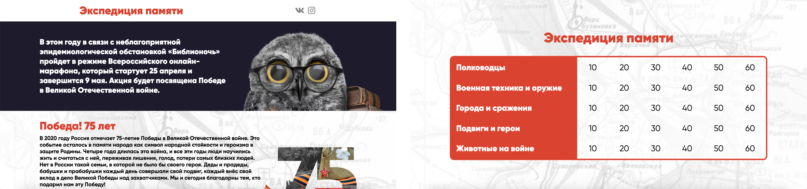

Туристический поратл г. Иваново. Обоснование проблемы
1. Причины важности туризма для экономики г.Иваново
Туризм является одной из главных отраслей экономики. Он оказывает значительное влияние на социально-экономическое развитие региона, так как затрагивает и другие – смежные отрасли народного хозяйства, такие как транспорт, связь, строительство, сельское хозяйство. За быстрые темпы роста он признан экономическим феноменом столетия.
2. Обоснование необходимости создания туристического портала г.Иваново
Мы обратились к официальному туристическому порталу Ивановской области. Дизайн главной страницы на первый взгляд кажется приемлемым и приятным (за исключением неровной верстки некоторых разделов). Однако при детальном изучении сайта становятся очевидными существенные недостатки. Во-первых, интерактивная карта с отмеченными на ней достопримечательностями не масштабируется, вследствие чего сложно с ней взаимодействовать и практически невозможно выбрать нужное место на карте из-за наложения «флажков» друг на друга. Во-вторых, качество представленной информации оставляет желать лучшего: она либо излишняя и несодержательная, либо вовсе отсутствует. В-третьих, на мобильной версии сайта карта с достопримечательностями отсутствует, что является серьезным недостатком для туристов из числа молодежи. Отметим также, что подключение к сайту проходит через незащищенный протокол HTTP, что затрудняет попадание сайта в органическую выдачу поисковых систем.
С учетом всего вышесказанного, актуальность создания нового туристического портала очевидна.

Основные функции туристического портала г. Иваново
Веб-приложение должно предоставлять возможность просмотра информации о г. Иванове, ежегодных мероприятиях, некоторых достопримечательностях, информации о отелях, ресторанов, истории города, информации о транспорте, а также возможности построения маршрутов, исходя из заданных параметров и добавления, редактирования и удаления мест из административной панели
Основной целью данного веб-приложения является информирование туристов о истории г. Иваново, а также достопримечательностях. отелях, ресторанах и другой важной информации.
Туристический поратл г. Иваново. Общие сведения о проекте
Заказчик: Ивановская областная библиотека для детей и юношества
Исполнитель: Дубинский Никита, 181-321
План работ над проектом

Онлайн-игра "Экспедиция памяти". Обоснование проблемы
В 2020 году в связи со сложной эпидемиологической ситуацией все больше и больше мероприятий проводятся в режиме онлайн. Большое скопление людей сейчас является просто опасным. 25-26 апреля в рамках мероприятия "Библионочь-2020" была проведена онлайн-игра "Экспедиция памяти", посвященная 75 годовщине в Великой Отечественной войне.
Правила игры
Игра состоит из 5 разделов, связанных с тематикой Великой Отечественной войны по 6 вопросов в каждой категории. Вопросы представлены в форме тестирования с вариантами ответов. За каждый вопрос в зависимости от уровня сложности можно получить от 10 до 60 баллов. В случае правильного ответа участнику засчитывают то количество баллов, которое соответствует стоимости вопроса. Количество баллов за игру суммируется. Участники, набравшие наибольшее количество баллов, получат приз.

Онлайн-игра "Экспедиция памяти". Общие сведения о проекте
Заказчик: Ивановская областная библиотека для детей и юношества
Исполнитель: Дубинский Никита, 181-321
План работ над проектом